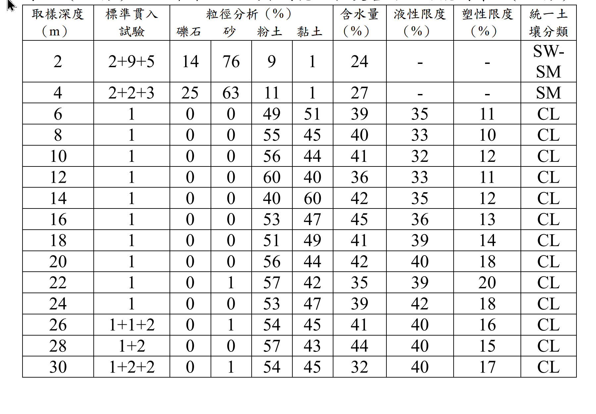

考題編號：SM-2023-4
主分類： SM-U2-3 開挖之穩定性分析
副分類： SM-U1-1 土壤基本性質與分類
分析法： 概念題
標籤： 基底隆起 高靈敏度黏土 深開挖災害 地盤改良
1. 原始題目重述 (Problem Restatement)
某建案基地為 1000 坪（地上 12 層、地下 3 層），開挖深度 11.95 公尺，採用連續壁深度 24 公尺。進行地下工程時即有鄰近住家反映牆壁龜裂漏水、磁磚掉落等情況，建物沉陷點及建物傾斜計監測數值超過警戒值，地下開挖至第 3 層時，大底未完成即發生支撐系統失敗，造成鄰近多戶民宅嚴重傾斜下陷。工址附近鑽探資料如下表所示。
(一) 請研判事故發生原因（15 分）
(二) 未來此區域深開挖工程災害防治可能對策。（10 分）

圖說：鑽探柱狀資料表顯示，深度 2m~4m 為砂土層（N=5~14），而深度 6m~24m 為極軟弱之黏土層（CL），標準貫入試驗 N 值全段皆為 1。黏土層含水量約在 35%~45% 之間，液性限度約 32%~42%，塑性限度約 10%~20%。26m 以下 N 值微幅上升至 3~4。
2. 考題核心精神與出題者意圖 (Core Concepts & Examiner's Intent)
本題以實際工程災變案例（極類似 2023 年基泰大直深開挖災變案）為背景，測驗考生能否從鑽探資料中判讀出「極軟弱且高靈敏度」土層的特性，並結合深開挖力學機制，指出導致破壞的核心原因（基底隆起、支撐失敗、連續壁貫入深度不足等），最後提出具體可行的實務防治對策。出題者意圖評估考生對於土壤物理性質（液性指數）如何影響工程行為的敏銳度，以及對深開挖擋土與地盤改良工法的熟悉度。
3. 解題戰略地圖與陷阱分析 (Strategic Roadmap & Trap Analysis)
- 判讀鑽探資料：
- 觀察 N 值：深度 6m~24m 的 N 值皆為 1，為極軟弱黏土。
- 計算液性指數（Liquidity Index, LI）：判斷土壤是否具高靈敏度。 - 分析破壞原因（四大面向）：
- 土質因素：高靈敏度極軟弱黏土。
- 力學機制：開挖深度達 11.95m，易引發基底隆起（Basal heave）。
- 擋土設計：連續壁深 24m 恰好停在 N=1 的軟弱層，無良好嵌固層，易發生踢腳破壞。
- 施工因素：大底未完成，內支撐可能無法承受土體擾動後驟增的側向土壓力。 - 提出防治對策（四大面向）：
- 土質改善：各種地盤改良工法（如 DCM, JSG）以增加基底承載力。
- 結構設計：加深連續壁至堅實層、採用 Top-Down 工法等。
- 施工管理：分區快挖早撐、控制擾動。
- 監測應變：落實監測與緊急應變機制。
- 陷阱：未充分利用表格中的含水量與阿太堡限度（液性限度、塑性限度）進行計算，僅憑 N=1 判斷軟弱。應具體計算液性指數（LI > 1）以證明其「流動性」及「高靈敏度」。
3.5 變數層次分析 (Variable Hierarchy Analysis)
最終目標
從鑽探數據判讀極軟弱與高靈敏度土層特性，綜合分析深開挖破壞機制並提出防治對策
本題關鍵公式（依計算順序）
-
塑性指數（Plasticity Index）：
$$PI = LL - PL$$ -
液性指數（Liquidity Index）：
$$LI = \frac{w - PL}{\boxed{PI}}$$
L1：題目直接給定
| 符號 | 數值 | 說明 |
|---|---|---|
| $H_e$ | 11.95 m | 開挖深度 |
| $D_w$ | 24 m | 連續壁深度 |
| $N$ | 1 | 深度 6m~24m 的 SPT-N 值 |
| $w$ | 35%~45% | 黏土層天然含水量 |
| $LL$ | 32%~42% | 黏土層液性限度 |
| $PL$ | 10%~20% | 黏土層塑性限度 |
L2：需知識點推導
液性指數計算與靈敏度判斷
| 符號 | 公式／來源 | 卡關? |
|---|---|---|
| $PI$ | $LL - PL$ | |
| $LI$ | $(w - PL) / PI$ | |
L3：深層知識（不懂就卡住）
| 知識點 | 說明 | 卡關? |
|---|---|---|
| 基底隆起破壞 | 在厚層極軟弱黏土中深開挖，極易因抗剪強度不足導致坑底土體向上隆起，引發連續壁向內擠壓及支撐破壞。 | |
| 擋土牆嵌固作用 | 連續壁底部若未貫入較堅硬之承載層，將缺乏足夠的被動土壓力抵抗側向變形，容易發生「踢腳」變形。 | |
| 液性指數與靈敏度 | 當 $LI > 1$ 時，天然含水量大於液性限度，土壤結構一旦受擾動（如開挖解壓），強度會大幅喪失，表現如黏滯性流體。 |
4. 步驟化詳細計算過程 (Step-by-Step Detailed Calculation)
(一) 事故發生原因研判
本工程發生支撐系統失敗與嚴重鄰損，經檢視鑽探資料，其破壞原因可歸納為以下四個主要面向：
1. 土質因素：極軟弱且具高靈敏度（High Sensitivity）之厚層黏土
從鑽探柱狀圖可知，深度 6m 至 24m 皆為細粒黏土（CL），且其標準貫入試驗數值（SPT-$N$）皆為 1，顯示抗剪強度（$S_u$）極低。
進一步檢視其物理性質，以深度 10m 為例：
- 天然含水量 $w = 41\%$
- 液性限度 $LL = 32\%$
- 塑性限度 $PL = 12\%$
- 塑性指數 $PI = LL - PL = 32 - 12 = 20\%$
計算其液性指數（Liquidity Index, $LI$）：
$$LI = \frac{w - PL}{PI} = \frac{41 - 12}{20} = 1.45$$
由於 $\boxed{LI > 1.0}$，代表該地層天然含水量甚至超過其液性限度。此類土壤處於近乎液體狀態，具有極高之靈敏度。一旦受到開挖解壓或施工擾動，土壤內部結構破壞，其抗剪強度會發生巨幅下降，甚至產生如泥水般的流動行為。
2. 破壞機制：極可能發生基底隆起（Basal Heave）
本案開挖深度達 11.95m，且開挖面下方仍為厚達十餘公尺的 $N=1$ 極軟弱黏土層。在此種極度軟弱之地層進行深開挖，底部土壤之抗剪強度極小，無力抵抗壁外側之強大上覆土壓與水壓差。極容易發生基底隆起破壞，導致坑底土方上湧，連續壁下半段失去坑內側的抵抗力而向內擠壓。
3. 擋土設計因素：連續壁貫入深度不足，缺乏有效嵌固
連續壁設計深度為 24m，然而由鑽探資料可見，深度 24m 處之 $N$ 值仍為 1，直到 26m 處 $N$ 值才微幅上升至 3。這意味著連續壁的底部依然懸浮於極軟弱之黏土層中，並未貫入或著床於較堅硬之承載層（如緊密砂層或硬黏土層）。此設計導致連續壁底部缺乏足夠的被動土壓力嵌固，容易發生連續壁底端向坑內位移的「踢腳（Kick-out）」現象。
4. 施工因素：支撐系統無法承受擾動後驟增之土壓力
開挖至第 3 層時大底尚未完成，此時連續壁的變形完全仰賴內支撐系統維持。極軟弱且高靈敏度之黏土層因施工解壓、變形擾動，強度大幅喪失，使連續壁背側之主動土壓力轉趨向靜水壓般急遽增加。當連續壁因基底隆起或踢腳而產生過大側向變形時，引發支撐系統受力不均或超載，最終導致連鎖挫屈破壞。牆體的大幅變形與破壞伴隨大量土體流失（Volume loss），是造成鄰近民宅嚴重傾斜下陷的主因。
(二) 未來此區域深開挖工程災害防治可能對策
針對上述軟弱地層特性，未來若於此區域進行類似之深開挖工程，應採取以下防治對策：
1. 實施大範圍地盤改良（Ground Improvement）
針對極軟弱黏土引發基底隆起的問題，必須於開挖前對坑內底面以下甚至坑外之土壤進行地盤改良。常見且有效的方法包括：
- 深層攪拌工法（Deep Cement Mixing, DCM） 或 高壓噴射灌漿（Jet Grouting, 如 JSG/JGS）：將水泥漿液與軟土拌合，形成改良樁或改良塊體，以大幅提高開挖面下方土壤之抗剪強度，有效防止基底隆起並減少連續壁之側向位移。可依需求設計為全面改良、格狀改良或壁狀改良。
2. 加深連續壁貫入堅實地層（增加嵌固力）
連續壁深度不可僅停留在 $N=1$ 的軟弱地層。應依據更深層之鑽探資料，將連續壁加深至具備足夠承載力與強度的堅實土層中（例如深入 $N$ 值大於 30 之砂層或大於 15 之硬黏土層至少數公尺），以確保連續壁底部獲得足夠的被動側嵌固力，防止踢腳與管湧發生。
3. 採用高剛性擋土與支撐系統（Top-Down 工法）
在極軟弱黏土區，建議採用逆打工法（Top-Down Method）。利用鋼筋混凝土結構樓板取代臨時型鋼支撐作為擋土系統之橫向支撐，因樓板剛度極大，可有效控制連續壁側向變形，確保周邊地盤穩定。此外，可增加連續壁厚度或設置內擠壁（Cross Wall）、扶壁（Buttress Wall）來增加整體系統剛度。
4. 嚴格控管施工程序（分區快挖早撐）
高靈敏度土壤極怕擾動與長時間解壓。施工必須貫徹「分區開挖、早撐快挖」之原則。每一開挖區塊不宜過大，且開挖至預定標高後應在最短時間內架設支撐並施作大底混凝土，儘量減少軟弱土壤暴露與解壓的時間。
5. 建立嚴密之自動化監測與緊急應變機制
應密集佈設各項安全監測儀器（如連續壁內傾斜管、支撐應變計、水壓計、鄰房傾斜計及沉陷點等），並盡可能採用自動化即時傳輸。須設定更為保守的警戒與行動值，一旦發現變形速率異常，需立即啟動如回填土方、注水平衡、加設臨時支撐或緊急灌漿等應變措施，防止災變擴大。
5. 關鍵爭議點與進階探討 (Critical Issues & Advanced Discussion)
- 基泰大直災變案之縮影：本題的深度、土層條件與破壞描述（大底未完成即支撐破壞、鄰房嚴重傾斜下陷）與 2023 年基泰大直深開挖災變事件極為吻合。該事件的核心成因即為大臺北盆地特定區域的「極軟弱黏土（俗稱洪荒泥）」加上擋土系統與地盤改良不足所致。
- 液性指數的實務意義：在考場上，很多考生看到 $N=1$ 只會寫出「土壤軟弱、承載力不足」。但若能利用表格中的 $w, LL, PL$ 算出 $LI > 1$，點出「高靈敏度（High Sensitivity）」與「受擾動強度大幅喪失」的流體化特性，將能獲得極高分數，這也是出題老師特別提供阿太堡限度數據的用意。